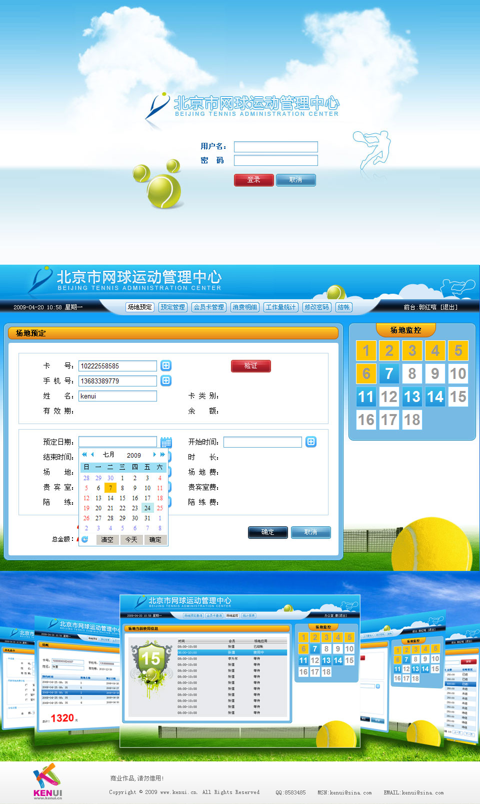

北京市网球管理中心场地管理软件
2009年06月
北京市网球运动管理中心隶属北京市体育局,有室内网球场地六片，室外网球场地十二片，中心赛场一片。主要是负责北京市网球运动项目训练及后备人才培养的协 调与管理；网球运动的推广和普及；开展与网球运动有关的竞赛、咨询、交流；利用中心的场地及设施开展相关的服务工作等。这里拥有专业的训练场地和高水平的 教练，是培养我国网球后备力量的摇篮。中心以促进中国网球事业为己任，提供面向不同层次需求的丰富活动，并常年面向社会举办网球培训班。我们为其管理中心的场地管理软件提供ui界面。
